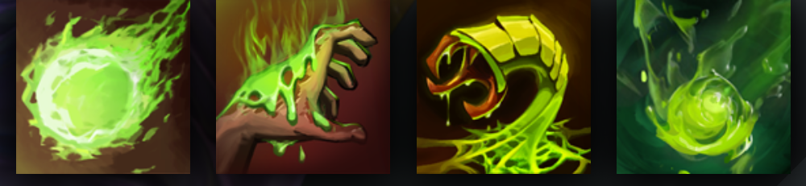

VENOMANCER
DEALS DAMAGE OVER TIME WITH VENOMOUS ATTACKS
HISTORY
In the Acid Jungles of Jidi Isle, poison runs in the veins and bubbles in the guts of every creature that scuttles, climbs or swoops between fluorescent vines dripping with caustic sap. Yet even in this toxic menagerie, Venomancer is acknowledged as the most venomous. Ages ago, an Herbalist named Lesale crossed the Bay of Fradj by coracle, searching for potent essences that might be extracted from bark and root, and found instead a nightmare transformation. Two leagues into Jidi's jungle, Lesale encountered a reptile camouflaged as an epiphyte, which stung him as he mistakenly plucked it. In desperation, he used his partial knowledge of the jungle's herbal bounty, mixing the venom of the (swiftly throttled) reptile with the nectar of an armored orchid, to compound an antidote. In the moments before a black paralysis claimed him completely, he injected himself by orchid-thorn, and instantly fell into a coma. Seventeen years later, something stirred in the spot where he had fallen, throwing off the years' accumulation of humus: Venomancer. Lesale the Herbalist no longer--but Lesale the Deathbringer. His mind was all but erased, and his flesh had been consumed and replaced by a new type of matter--one fusing the venom of the reptile with the poisonous integument of the orchid. Jidi's Acid Jungles knew a new master, one before whom even the most vicious predators soon learned to bow or burrow for their lives. The lurid isle proved too confining, and some human hunger deep in the heart of the Venomancer drove Lesale out in search of new poisons--and new deaths to bring.
ABILITIES
PAIRD WELL WITH
VIPER
URSA
ANTIMAGE